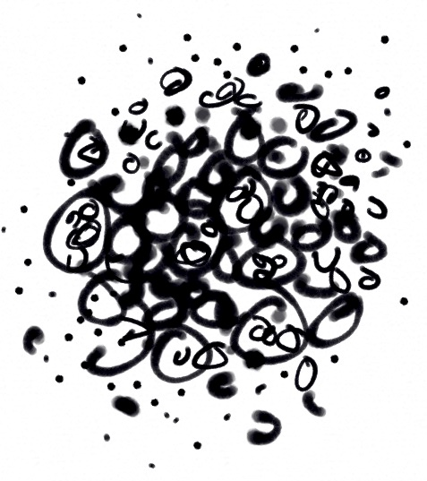

Get better at music composition and production

I’ve been making music for 25 years: playing in bands, DJing, composing, producing and releasing music. My academic training is in Fine Art practice. I’ve faced a lot of the challenges that occur to people at different stages of artistic development.
In my work as a designer I’m tasked with understanding problems, making the abstract concrete, balancing expression with pragmatism, balancing beauty with function, and navigating essential questions of vision and purpose.
As a music coach I’ve worked with Open Music Lab and Berlin Academy of Electronic Music, mentoring 1:1 and leading group workshops.
My music on → Bandcamp → Spotify→ YouTube50€/session. Reduced fee possible.
Interested? Send an mp3 to ant@ajo.design